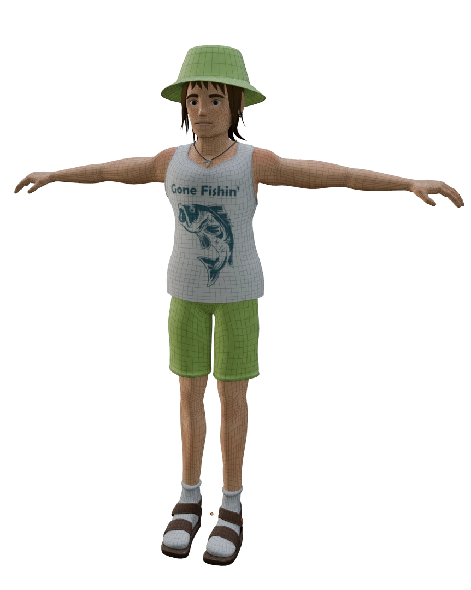

Character
This is the most advanced character model I have created, featuring a high poly-count, clothing and morph targets for facial animation. Attention has been paid to the topology of the character so that they support rigging and skinning well in the animation.
